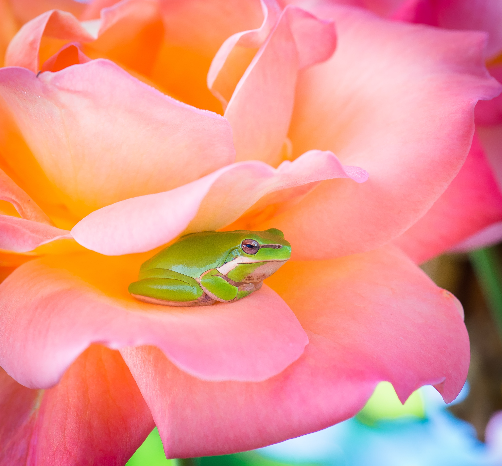
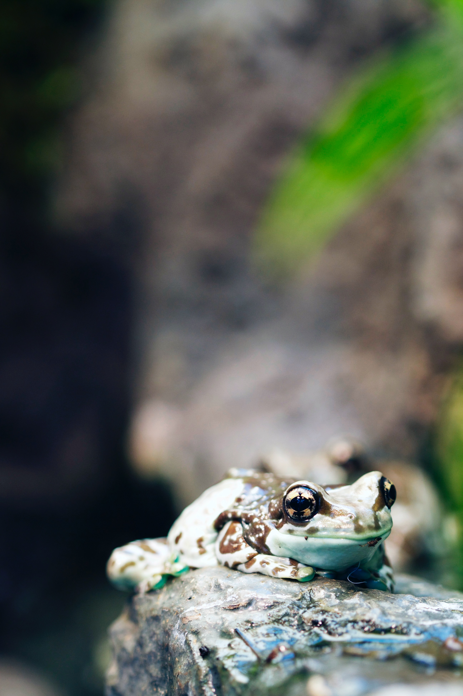
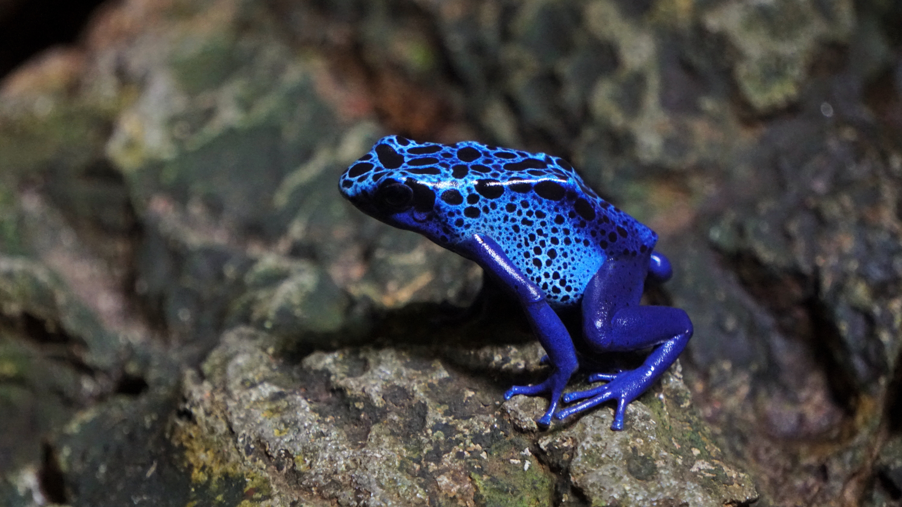

Bella
The Enigmatic Frog
Meet Bella, the enchanting frog with a unique penchant for perching atop people's heads. This charismatic amphibian has an insatiable appetite for succulent strawberries, and her eyes positively sparkle when she spies this delectable treat. Yet, Bella's most endearing pastime is her fascination with watching cats slumber. She's a charming and eccentric companion, turning heads with her delightful quirks and captivating personality.
Adopt!!!Crowbar
The Conceited Frog
Introducing Crowbar, the quirky frog with a penchant for the unusual. Crowbar's favorite pastime involves nibbling on the fingertips of anyone willing to indulge his peculiar curiosity, leaving a trail of bemused smiles in his wake. But it's under the running sink water where he truly comes alive, reveling in the sensation of tiny droplets cascading over his skin. Yet, Crowbar's most fascinating quirk is his obsession with the bathroom mirror, where he stares at his own reflection for hours, leaving one to wonder if he sees something extraordinary in himself that the world has yet to discover.
Adopt!!!Paddle
The Ookie Spooky Wookie Frog
Introducing Paddle, the strikingly blue and intimidating-looking frog with a heart full of warmth. Despite his fearsome appearance, Paddle adores cuddles and is known for melting hearts with his affectionate nature. He has a particular fondness for kissing people on their noses, leaving behind a trail of laughter and smiles. Paddle also relishes the gentle touch of head pats, reminding us that appearances can be deceiving, and that there's a soft and loving side to everyone, no matter how they may seem at first glance.
Adopt!!!